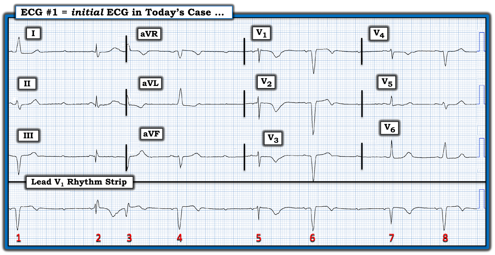
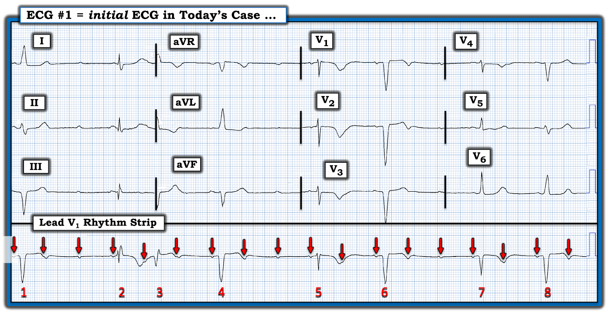
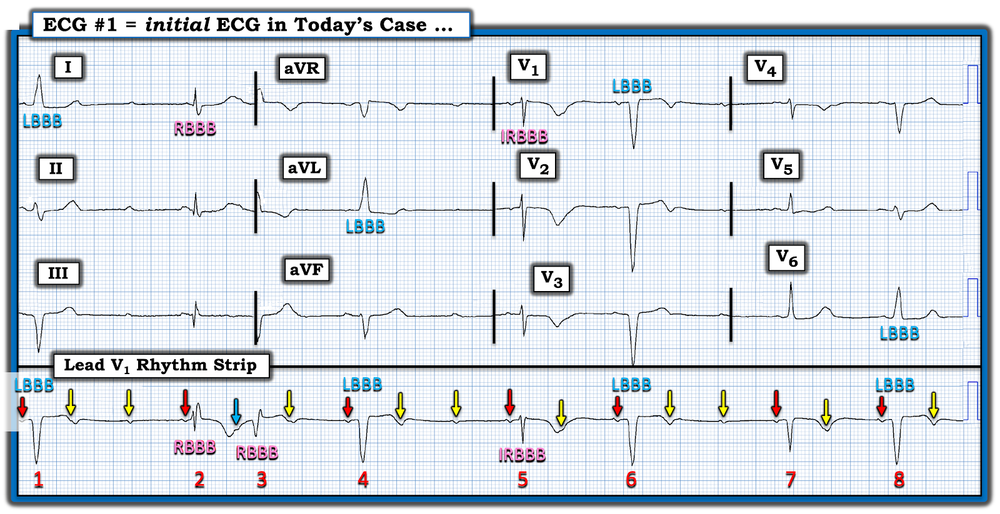
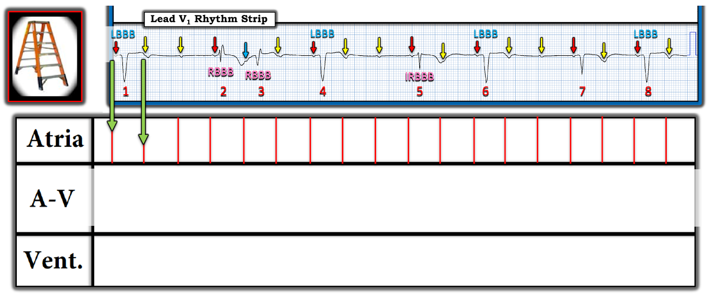
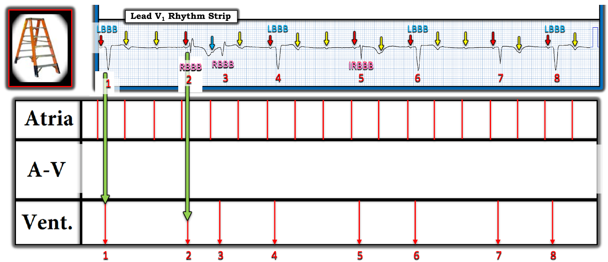
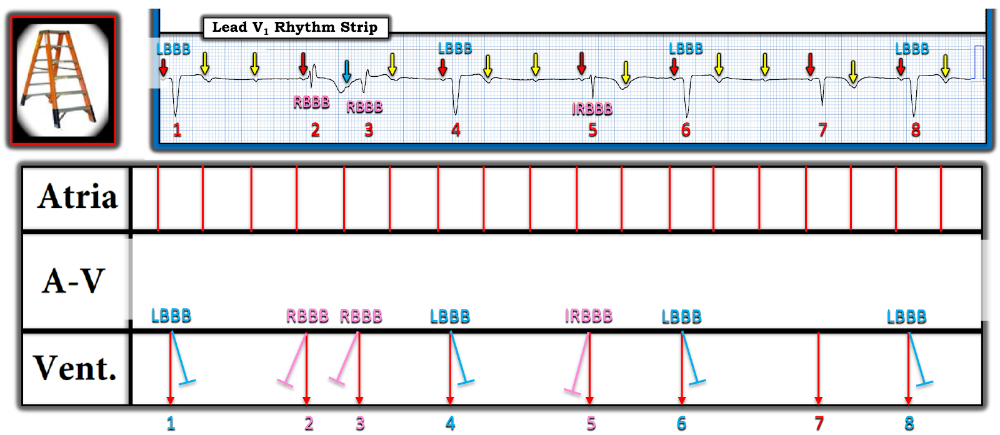
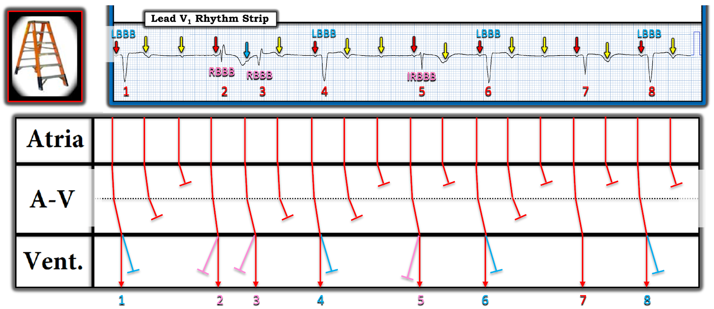

ECG Blog #401 — Loại blốc nào?
Điện tâm đồ ở Hình 1 được ghi ở một phụ nữ lớn tuổi — đến ED (Emergency Department — khoa cấp cứu) vì khó thở khi gắng sức trong vài tuần gần đây.
- BẠN có "Suy nghĩ nhanh" gì về ca này?


"Suy nghĩ Nhanh" CỦA TÔI về CA BỆNH hôm nay:
Điện tâm đồ ở Hình 1 rất đáng lo ngại — vì vậy thật may mắn là người phụ nữ lớn tuổi này đã đến ED đúng lúc!
- Nhịp ở Hình 1 phức tạp — và khó diễn giải chính xác nếu không nghiên cứu kỹ. Dù vậy — các dấu hiệu rõ ràng gồm: i) Nhịp chậm rõ rệt! — ii) Có sóng P rất nhỏ-nhưng-chắc-chắn hiện diện trên dải nhịp chuyển đạo V1 dài — mà thoạt nhìn có vẻ như (?) đều! — iii) Một số sóng P đều này không được dẫn truyền — gợi ý ít nhất một dạng blốc AV đáng kể; — và, iv) Ít nhất 3 hình dạng QRS khác nhau (nếu không nói là nhiều hơn) — mà xét rằng chuyển đạo được theo dõi là chuyển đạo V1, có thể đại diện cho các biến thể của dẫn truyền bình thường, RBBB và LBBB! (dẫn truyền blốc nhánh phải và trái — Right and Left Bundle Branch Block).
- ĐIỂM THEN CHỐT (PEARL) #1: Mục tiêu của việc đọc điện tâm đồ trên lâm sàng với một bản ghi như thế này là nhanh chóng diễn giải "những điều thiết yếu" — và để lại các chi tiết của điện tâm đồ và dải nhịp ở Hình 1 cho đến sau này, khi có thời gian. Vì vậy tôi cố ý không đi sâu hơn 4 kết luận chung đã nêu ở gạch đầu dòng thứ 1 phía trên — những kết luận mà tôi chỉ mất không quá vài giây để đưa ra! Nhận định Tức thì của tôi — là người phụ nữ lớn tuổi có tiền sử triệu chứng vài tuần này nhiều khả năng sẽ xuất viện với một máy tạo nhịp.
ĐIỂM THEN CHỐT #2:
Diễn giải điện tâm đồ 12 chuyển đạo ở Hình 1 không phải việc dễ! Đó là vì có nhiều hình dạng QRS — và chúng ta chưa biết nhát nào là trên thất (cũng như chúng có đặc tính dẫn truyền như thế nào). Dù vậy — hãy NHÌN xem có một nhịp nền hay không!
- Nhát #5 và #7 trông hẹp và đều có sóng P đi trước với khoảng PR hằng định và bình thường. Điều này gợi ý nhát #5 và #7 có lẽ là các nhát dẫn truyền từ xoang bình thường. Nghĩa là chúng ta có thể đánh giá hình dạng sóng ST-T để tìm thay đổi thiếu máu cục bộ ở các chuyển đạo V1,V2,V3 ghi đồng thời cho nhát #5 — và ở các chuyển đạo V4,V5,V6 cho nhát #7.
- Có sóng T đảo ngược sâu, đối xứng kèm khoảng QTc kéo dài ở các chuyển đạo trước V1,V2,V3. Điều này gợi ý thiếu máu cục bộ không rõ đã kéo dài bao lâu.
- Hình dạng ST-T ở các chuyển đạo V4,V5,V6 ít đáng lo hơn — với sóng T đảo ngược nông ở V4 — và đoạn ST dẹt kèm chênh xuống nhẹ ở các chuyển đạo V5,V6 — nhưng trông không cấp tính.
- Vượt ra ngoài phần cốt lõi: Người đọc nâng cao có thể đã nghi ngờ rằng nhát #2 trên dải nhịp chuyển đạo V1 dài là dẫn truyền từ xoang kèm RBBB (vì hình dạng rSR' ở chuyển đạo V1 — và đi trước nhát này là cùng khoảng PR như đã thấy ở các nhát xoang #5 và 7).
- Tương tự — Người đọc nâng cao cũng có thể nghi ngờ rằng nhát #4 trên chuyển đạo V1 dài là dẫn truyền từ xoang kèm LBBB (vì QRS âm hoàn toàn ở chuyển đạo V1, và hình dạng dương một pha ở chuyển đạo aVL — cũng có cùng khoảng PR đi trước như các nhát dẫn truyền từ xoang khác).
- "Tin tốt" — là hình dạng ST-T ở các chuyển đạo I,II,III ghi đồng thời cho nhát #2 — và ở các chuyển đạo aVR,aVL,aVF cho nhát #4 — trông không cấp tính.
NHẬN ĐỊNH về Bản ghi Hôm nay:
Vấn đề chính trong ca hôm nay của người phụ nữ lớn tuổi có tiền sử khó thở khi gắng sức vài tuần này — là nhịp chậm rõ rệt kèm một dạng blốc AV nào đó.
- Với tuổi cao của bệnh nhân — nếu không tìm thấy nguyên nhân "có thể khắc phục", nhiều khả năng bà bị SSS (hội chứng suy nút xoang — Sick Sinus Syndrome) và sẽ cần máy tạo nhịp (Xem ECG Blog #342 để biết thêm về SSS).
- Với tiền sử khó thở khi gắng sức trong vài tuần (nhưng không nhắc tới đau ngực) — và — dấu hiệu sóng T đảo ngược sâu, đối xứng ở các chuyển đạo trước (như ở Điểm then chốt #2) — có thể khởi phát triệu chứng của bà là hậu quả của một "nhồi máu cơ tim thầm lặng" (Silent MI) (Xem ECG Blog #228 để biết thêm về nhồi máu cơ tim "thầm lặng").
- Điểm MẤU CHỐT: Dù rối loạn nhịp hôm nay hấp dẫn đến đâu — việc giải thích chi tiết cơ chế của nhịp này là không cần thiết để xử trí lâm sàng tối ưu. Thay vào đó — các điểm lâm sàng tóm tắt ở 2 gạch đầu dòng trên là đủ! Dù vậy — tôi tin rằng hiểu được cơ chế có thể có của nhịp hôm nay thực sự mang tính giáo dục, và củng cố diễn giải của chúng ta. Với những ai muốn tìm hiểu thêm — Hãy cùng theo dõi với tôi dưới đây!
=================================
Nhìn Kỹ hơn vào Nhịp Hôm nay:
Dù bạn có nhận ra các điểm nâng cao tôi nêu ở trên trong mục "Vượt ra ngoài phần cốt lõi" hay không — MẤU CHỐT là nhận ra nhịp chậm rõ rệt kèm một dạng blốc AV đáng kể nào đó, cùng với nhu cầu chuyển tuyến để có thể (nhiều khả năng) cấy máy tạo nhịp.
- ĐIỂM CỘNG nếu bạn cũng nhận ra sóng T đảo ngược sâu, đối xứng ở thành trước — gợi ý có thể đã có "nhồi máu cơ tim thầm lặng" vài tuần trước, vào thời điểm triệu chứng của bệnh nhân khởi phát.
Các bước tiếp theo để Xác định Nhịp:
- Bước tiếp theo dễ nhất trong diễn giải — là đánh dấu sóng P trên dải nhịp chuyển đạo V1 dài. Chính vì biên độ nhỏ của các sóng P ở chuyển đạo này — mà compa đo (calipers) giúp ích rất nhiều (và tăng tốc) cho việc phát hiện hoạt động nhĩ.
- ĐIỂM THEN CHỐT #3: Tôi đã đánh dấu bằng mũi tên ĐỎ ở Hình 2 — các sóng P trên dải nhịp chuyển đạo V1 dài. Một số sóng P này bị che khuất một phần trong một số sóng T. Đây chính là lúc compa đo hỗ trợ: — Chọn 2 sóng P liên tiếp mà bạn chắc chắn thấy. Rồi "dò bước" khoảng compa này trên toàn bộ dải nhịp chuyển đạo V1.
- ĐIỂM THEN CHỐT #4: Hãy NHÌN lại dải nhịp chuyển đạo V1 dài ở Hình 2. Giờ khi tất cả sóng P đã được đánh dấu — Chẳng phải dễ nhận ra hơn nhiều sao rằng khoảng PR trước các nhát #1,2; 4; 5; 6; 7; và 8 đều như nhau! Điều này cho biết rằng bất chấp hình dạng QRS khác nhau — mỗi nhát này đều dẫn truyền từ xoang!


TẠI SAO có quá nhiều Hình dạng QRS?
Tôi đã gợi ý lý do vì sao có nhiều hình dạng QRS. Hãy NHÌN vào Hình 3 — trong đó tôi đã thêm nhãn màu để thuận tiện cho việc bàn luận.
- Mũi tên ĐỎ ở Hình 3 đánh dấu các sóng P dẫn truyền từ xoang — vì mỗi phức bộ QRS theo sau các sóng P này (tức là các nhát #1,2,4,5,6,7 và 8) đều có khoảng PR hằng định và bình thường đi trước.
- Sóng P mũi tên VÀNG không được dẫn truyền. Rõ ràng là có blốc AV độ 2 "mức độ cao" — vì khi có nhịp nhĩ đều, chúng ta thấy nhiều lần các sóng P mũi tên VÀNG liên tiếp không dẫn truyền mặc dù có đủ cơ hội để dẫn truyền (Xem ECG Blog #399 — để biết thêm về blốc AV "mức độ cao").
- Tôi phân biệt sóng P còn lại bằng một mũi tên XANH LAM — vì sóng P này có khoảng PR dài hơn tất cả các sóng P mũi tên ĐỎ — và theo sau là một sóng P không dẫn truyền (tức là mũi tên VÀNG) sau nhát #3. Điều này gợi ý nhát #2 và #3 tạo thành một chu kỳ 3:2 của Wenckebach AV (tức là blốc AV độ 2 Mobitz I).
Tôi cũng đã đánh dấu các hình dạng QRS khác nhau ở Hình 3:
- ĐIỂM THEN CHỐT #5: Cái hay của việc có điện tâm đồ 12 chuyển đạo cùng một dải nhịp chuyển đạo dài ghi đồng thời bên dưới — là nó cho chúng ta "4 góc nhìn" về hình dạng QRS của mỗi nhát trong 8 nhát của nhịp hôm nay.
- Các nhát #1,4,6 và 8 — đều trông giống nhau trên dải nhịp chuyển đạo V1 dài (tức là đều biểu hiện phức bộ QRS rộng, âm). Lý do tôi biết điều này phù hợp với dẫn truyền LBBB — là chúng ta thấy QRS rộng, hướng lên, dương hoàn toàn điển hình của nhát #1 ở chuyển đạo I ghi đồng thời — của nhát #4 ở chuyển đạo aVL — và của nhát #8 ở chuyển đạo V6. Hình dạng QRS của nhát #6 cũng phù hợp với dẫn truyền LBBB — vì QRS chủ yếu âm ở mỗi chuyển đạo trước tim.
- Nhát #2 phù hợp với dẫn truyền RBBB — vì nó biểu hiện rSR' trên chuyển đạo V1 dài — kèm sóng S tận rộng ở chuyển đạo bên I ghi đồng thời.
- Tôi cũng đánh dấu nhát #3 là phù hợp với dẫn truyền RBBB — vì hình dạng QRS của nó tương tự nhát #2 trên dải nhịp chuyển đạo V1 dài.
- Nhát #5 không rộng, nhưng biểu hiện một sóng r' nhỏ ở chuyển đạo V1 dài — nên nhát này nhiều khả năng phản ánh dẫn truyền RBBB không hoàn toàn.
- ĐIỂM THEN CHỐT #6: Chỉ định tạo nhịp vĩnh viễn trong ca hôm nay là chính đáng dựa trên nhiều cơ sở, gồm: i) Bệnh nhân lớn tuổi có nhịp chậm rõ rệt này đã có triệu chứng nhiều tuần; ii) Nhịp của bà là blốc AV độ 2 mức độ cao; và, iii) Có BBB (blốc nhánh — Bundle Branch Block) luân phiên — bản thân điều này đã là dấu hiệu của bệnh hệ thống dẫn truyền nặng, có nguy cơ tiến triển thành ngưng thất (ventricular standstill).


=================================
Minh hoạ bằng Giản đồ bậc thang:
Đến đây — tôi cần suy luận, và rồi vẽ một giản đồ bậc thang mà sau đó tôi có thể kiểm chứng để bảo đảm một cơ chế hợp lý cho rối loạn nhịp hôm nay.
- Các chú thích tuần tự qua 4 Hình tiếp theo minh hoạ quá trình suy nghĩ của tôi. (Xem ECG Blog #188 để ôn lại cách đọc và/hoặc vẽ giản đồ bậc thang).
- XIN NHẤN MẠNH: Giản đồ bậc thang hôm nay là một thử thách. Tôi hoàn toàn thừa nhận đã cần vài lần thử cho đến khi cuối cùng rút ra được một cơ chế hợp lý liên quan đến blốc hai tầng ở đường ra khỏi nút AV. Dù vậy — tôi hy vọng rằng ngay cả những người đọc ít kinh nghiệm với giản đồ bậc thang vẫn có thể theo dõi được cơ chế tôi đề xuất ở Hình 7 cuối cùng.
=================================
Bắt đầu Giản đồ bậc thang:






=================================
ĐIỂM THEN CHỐT #7: Vì sự phức tạp của nhịp hôm nay — tôi đã phải thử-và-sai một số lần trước khi đi đến giản đồ bậc thang tôi đề xuất dưới đây ở Hình 7. Hai nguyên tắc MẤU CHỐT đã giúp tôi đi đến giản đồ bậc thang này:
- Nguyên tắc #1: Cực kỳ hiếm khi một bệnh nhân luân phiên giữa Mobitz I và Mobitz II. Do đó — NẾU có bằng chứng rõ ràng của blốc AV độ 2, Mobitz loại I ở đâu đó trên bản ghi bạn đang diễn giải (hoặc ở đâu đó trên các dải nhịp theo dõi từ xa (telemetry) ghi gần đây) — thì rất có khả năng dẫn truyền Wenckebach dưới một dạng nào đó là nguyên nhân của các dạng blốc AV chưa rõ khác mà bạn thấy trên điện tâm đồ của bệnh nhân đó.
- Như đã nêu trước đó — khoảng PR tăng dần từ nhát #2 đến nhát #3, theo sau là sóng P không dẫn truyền (mũi tên VÀNG) sau nhát #3 — phù hợp với một chu kỳ 3:2 của Wenckebach AV (tức là blốc AV độ 2 Mobitz I). Điều này khiến rất có khả năng blốc 2:1 của các nhát #1,4,5,6,7 và 8 cũng là một biểu hiện của dẫn truyền Wenckebach.
- Nguyên tắc #2: Wenckebach AV đơn thuần dẫn đến không dẫn truyền một sóng P đúng lúc. Nhưng như các sóng P mũi tên VÀNG ở Hình 7 cho thấy — chúng ta thấy các sóng P đúng lúc, không dẫn truyền liên tiếp trong nhiều khoảng R-R — điều này gợi ý mạnh rằng có blốc hai tầng ở đường ra khỏi nút AV! (Xem ECG Blog #347 để biết thêm về Wenckebach AV hai tầng).
=================================
Tổng Hợp Lại Tất cả:
- Như đã bàn trong ECG Blog #347 — đường CHẤM CHẤM ở Tầng Nút AV trong Hình 7 thể hiện theo sơ đồ 2 mức blốc đường ra khỏi nút AV.
- Chúng ta biết rằng nhát #2 và 3 được dẫn truyền xuống tâm thất trong một chu kỳ Wenckebach AV 3:2.
- Chúng ta biết rằng các nhát #1,4,5,6,7 và 8 cũng đều là nhát được dẫn truyền, dù kèm blốc nhánh luân phiên.
- Điều này buộc chúng ta phải đặt giả thuyết về đường lan truyền cho mỗi sóng P không dẫn truyền (mũi tên VÀNG) — trong đó 3 khoảng R-R chứa các sóng P mũi tên VÀNG liên tiếp — phải biểu hiện blốc 1 trong các sóng P này ở mỗi mức trong 2 mức bên trong Tầng Nút AV (mà tôi thể hiện theo sơ đồ ở Hình 7).


==================================
DIỄN TIẾN CỦA CA BỆNH:
Sau khi đánh giá nhịp ban đầu của bệnh nhân — bà được nhập vào khoa có theo dõi monitor với kế hoạch đặt máy tạo nhịp. Không may, trước khi việc này được thực hiện — bệnh nhân bị ngừng tim. Bà được hồi sức thành công — với nhịp sau ngừng tim tương tự như nhịp thấy ở Hình 1.
- Thông tim không phát hiện bệnh mạch vành đáng kể! Vì vậy dù ban đầu tôi nghi ngờ rằng sóng T đảo ngược sâu ở thành trước trên bản ghi 12 chuyển đạo ở Hình 1 (kết hợp với tiền sử khó thở vài tuần) có thể phản ánh một nhồi máu "thầm lặng" xảy ra vào thời điểm triệu chứng của bệnh nhân khởi phát — kết quả thông tim âm tính lại phản bác điều này. Thay vào đó — kết quả thông tim âm tính nghiêng nhiều hơn về bệnh sử thuần tuý của SSS (hội chứng suy nút xoang — Sick Sinus Syndrome) ở người phụ nữ lớn tuổi này (Xem ECG Blog #342 để biết thêm về SSS — và ECG Blog #228 để biết thêm về nhồi máu cơ tim "thầm lặng").
- Bệnh nhân đã được đặt máy tạo nhịp vĩnh viễn.
Như mọi khi — tôi hoan nghênh các câu hỏi và/hoặc bình luận về bài ECG Blog hôm nay! CẢM ƠN bạn đã quan tâm!
==================================
Lời cảm ơn: Tôi xin cảm ơn Hans Helseth (từ Minnesota, Hoa Kỳ) về ca bệnh và bản ghi này (và ghi nhận công của Hans cho giản đồ bậc thang được vẽ rất đẹp mà tôi đã chỉnh sửa đôi chút).
==================================
Các bài ECG Blog Liên quan đến Ca hôm nay:
- ECG Blog #205 — Ôn lại Cách tiếp cận Hệ thống của tôi trong diễn giải điện tâm đồ 12 chuyển đạo.
- ECG Blog #185 — Ôn lại Cách tiếp cận Ps, Qs, 3R trong diễn giải nhịp.
- ECG Blog #188 — Ôn lại cách đọc và vẽ Giản đồ bậc thang (kèm LIÊN KẾT tới hơn 90 ca giản đồ bậc thang — nhiều ca có minh hoạ tuần tự từng bước).
- ECG Blog #192 — 3 Nguyên nhân của Phân ly nhĩ thất.
- ECG Blog #191 — Ôn lại sự khác biệt giữa Phân ly nhĩ thất và Blốc AV hoàn toàn.
- ECG Blog #389 — ECG Blog #373 — và ECG Blog #344 — ôn lại một số ca minh hoạ "giải quyết vấn đề blốc AV".
- ECG Blog #259 — Ôn lại khái niệm Blốc AV Hai Tầng.
- Bài đăng ngày 25 tháng 10 năm 2021 trên Dr. Smith's ECG Blog — Bình luận của tôi (ở cuối trang) trình bày cách tiếp cận của tôi với một ca khác về blốc Wenckebach hai tầng.
- ECG Blog #226 — Phân tích chi tiết một Ca bệnh phức tạp (gồm một ECG Video Pearl dài 11:00 phút hướng dẫn bạn từng bước dựng một giản đồ bậc thang với dẫn truyền Wenckebach và blốc hai tầng bên trong nút AV).
- ECG Blog #243 — Ôn lại một ca cuồng nhĩ (AFlutter) với Wenckebach hai tầng ở đường ra khỏi nút AV.

PHẦN BỔ SUNG (28/10/2023):

ECG Video (Media PEARL #52) dài 15 phút này — Ôn lại 3 Loại blốc AV độ 2 — cộng thêm — thuật ngữ khó định nghĩa blốc AV "mức độ cao". Tôi bổ sung tài liệu này bằng 2 tài liệu PDF phát tay sau đây.
- Mục 2F (6 trang = Câu trả lời "ngắn") trong cuốn ECG-2014 Pocket Brain của tôi cung cấp phần ôn tập nhanh bằng văn bản về các blốc AV.
- Mục 20 (54 trang = Câu trả lời "dài") trong ACLS-2013-Arrhythmias Expanded Version của tôi cung cấp phần bàn luận chi tiết về việc các blốc AV LÀ GÌ — và không phải là gì!
- ECG Media Pearl #4 (Audio 4:30 phút) — Các blốc AV & Khi nào nghi ngờ Mobitz I — Xem ECG Blog #186 —

ECG Media PEARL #71 (5:45 phút Audio) — Ôn lại hiện tượng Wenckebach Hai Tầng ở đường ra khỏi nút AV (CÁCH nhận ra hiện tượng này — và cách phân biệt nó với Mobitz II).